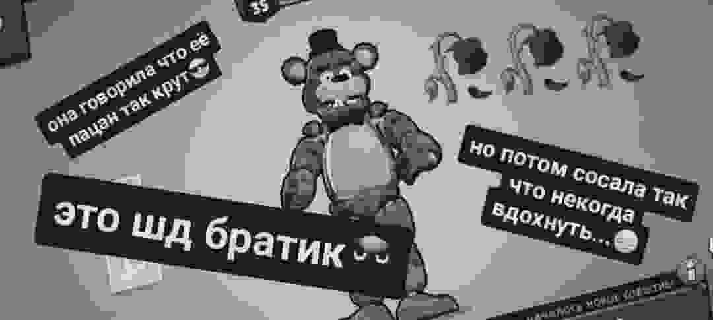

Главный герой игры, Майк Шмидт, устроился на работу ночным охранником в семейную пиццерию «Freddy Fazbear’s Pizza», принадлежащей вымышленной компании «Fazbear Entertainment». До Майка работал другой охранник, и именно он оставляет голосовые сообщения каждую ночь (до тех пор, пока его не убьют в четвёртую ночь, после чего в пятую ночь будут только искажённые звуки), в которых объясняет мрачные тайны истории пиццерии. Он объясняет Майку, что четыре аниматронных персонажа (медведь Фредди, заяц Бонни, курица Чика и лис Фокси) по ночам оживают, чтобы их сервоприводы не закисли от долгого простоя. Бывший охранник также объясняет ему, что если один из аниматроников встретит человека ночью, он подумает, что человек является эндоскелетом без костюма, и робот «насильно запихнёт» его в запасной механический костюм Фредди, что убьёт человека. На протяжении всей игры будут встречаться газетные вырезки и истории из телефонных звонков, в которых становится понятно, что репутация ресторана очень сильно пострадала. Бывший охранник упоминает инцидент «Укус 87», в котором аниматроник откусил ребёнку лобную долю головы. Вырезки из газет в восточном коридоре гласят, что в пиццерии предположительно произошло массовое убийство: предполагается, что мужчина в костюме аниматроника заманил пятерых детей в заднюю комнату и убил их. Позже в ресторан стали поступать жалобы на то, что аниматроники стали неприятно пахнуть и их глаза и пасти сочатся кровью и слизью. Один из посетителей сравнил их с «ожившими трупами», намекая, что трупы убитых детей скрыты внутри аниматроников, и призраки детей владеют ими. После седьмой ночи Майка Шмидта увольняют за непрофессионализм и дурной запах
Second Page (rofl) 